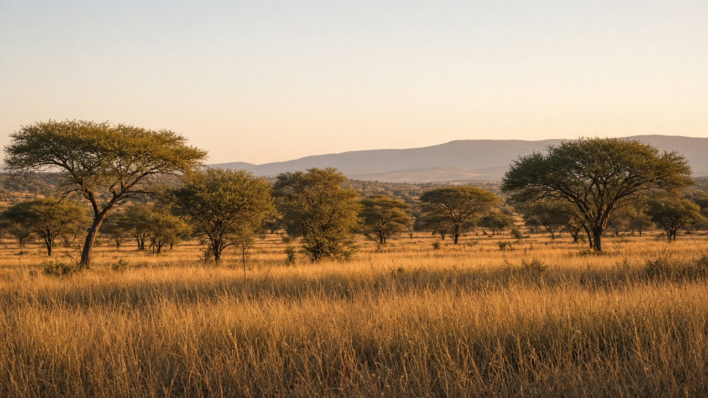
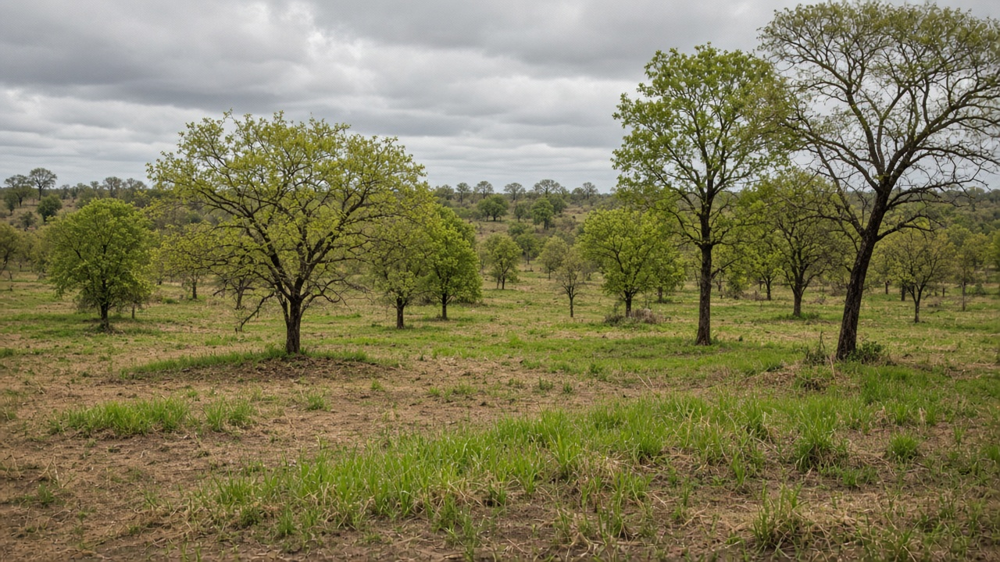
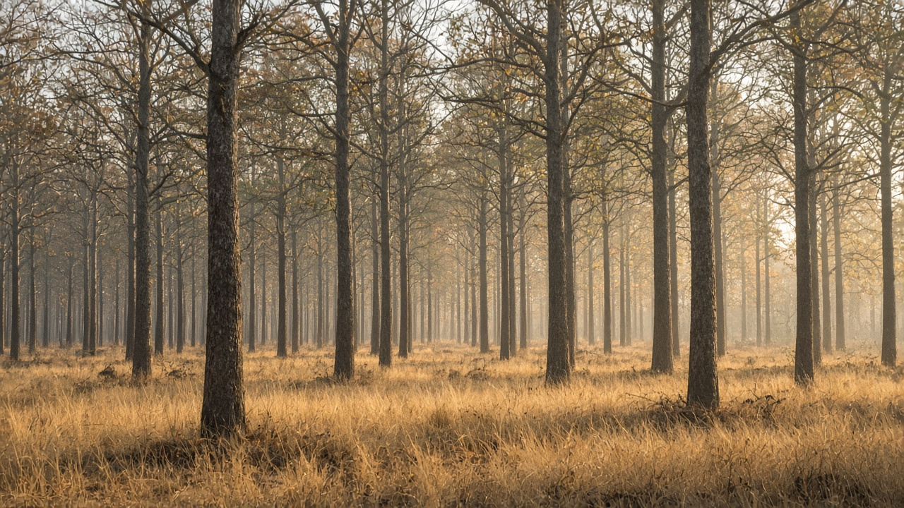

Dry Forests, Savannas, and Woodlands
Published on August 20, 2026

Dry forests, savannas, and woodlands occupy climates where rainfall is seasonal, totals are moderate, and a dry season of several months limits closed canopy. Trees are often drought-deciduous or sclerophyllous, with deep roots, thick bark, and the ability to resprout after fire or browsing. Grasses and herbs fill the gaps between stems, creating a two-phase system in which trees and C4 grasses compete for light, water, and nutrients yet also facilitate one another through shade and litter. Fire frequency, grazing pressure, and soil fertility decide whether a landscape stays open woodland, thickens into dry forest, or collapses toward shrubland. These biomes are easily misread as “degraded forest” when they are in fact stable, fire-adapted ecosystems that store carbon in roots and soils as well as in scattered trunks.
Seasonal water pulses drive phenology: leaf flush with the first rains, rapid grass growth, then senescence and fuel curing as the dry season lengthens. Surface fires in grass layers consume fine fuel without always killing mature trees, maintaining an open structure that many large herbivores and ground-nesting birds require. Overgrazing, fire exclusion, or conversion to cropland can flip the balance—woody thickening in some regions, bare soil and erosion in others. Termites, mycorrhizae, and nitrogen-fixing trees such as acacias recycle scarce nutrients, so clearing for charcoal or short-cycle farming quickly exhausts the site. Mapping tree cover alone therefore misses woodland condition: grass basal cover, fuel continuity, and soil crusts are equally important indicators of ecological health.
Management that fits dry forests and savannas uses fire as a tool rather than only as a threat, sets stocking rates that leave residual grass, and protects gallery forests along streams that hold water longer into the dry season. Assisted regeneration of native coppice species often outperforms dense plantation of thirsty exotics that fail in drought years. In South Asia, sal, teak, and mixed dry deciduous belts, including Nepal’s inner tarai and dun valleys, follow this seasonal logic: monsoon growth, winter leaflessness, and fire that must be planned with local forest user groups. Education should teach students to see open canopies as a biome type, not a failure of closed rainforest, so restoration targets grass–tree mosaics, water harvesting, and fuel management instead of wall-to-wall tree planting.

सुक्खा वन, सवाना र वुडल्यान्ड मौसमी वर्षा, मध्यम जम्मा र केही महिनाको सुख्खा यामले बन्द छानो सीमित गर्ने जलवायुमा हुन्छन्। रूखहरू प्रायः खडेरी-पतझड वा कडा-पात हुन्छन्, गहिरो जरा, बाक्लो बोक्रा र आगो वा चराइपछि पुनः पलाउने क्षमतासहित। घाँस र जडीबुटी काण्डबीचका खाली ठाउँ भर्छन्, दुई-चरण प्रणाली बनाउँछन् जहाँ रूख र सी-चार घाँस प्रकाश, पानी र पोषकका लागि प्रतिस्पर्धा गर्छन् तर छायाँ र कूडामार्फत एकअर्कालाई सहयोग पनि गर्छन्। आगो आवृत्ति, चराइ दबाब र माटो उर्वरताले परिदृश्य खुला वुडल्यान्ड रहन्छ, सुक्खा वनमा बाक्लिन्छ वा झाडीतिर ढल्छ भन्ने तय गर्छ। यी बायोमलाई सजिलै “क्षयीकृत वन” भनी गलत पढिन्छ जब तिनीहरू वास्तवमा स्थिर, आगो-अनुकूलित प्रणाली हुन् जसले छरिएका काण्डसँगै जरा र माटोमा कार्बन राख्छन्।
मौसमी पानी तरंगले फिनोलोजी चलाउँछ: पहिलो वर्षासँग पात पलाउने, तीव्र घाँस वृद्धि, त्यसपछि सुख्खा याम लम्बिँदा सुकाइ र इन्धन पाक्ने। घाँस तहका सतह आगोले परिपक्व रूख सधैं नमारी मसिनो इन्धन खान्छन्, खुला संरचना कायम राख्छन् जुन धेरै ठूला शाकाहारी र भुइँ-गुँड चरा चाहन्छन्। अति चराइ, आगो बहिष्कार वा बाली जमिनमा रूपान्तरणले सन्तुलन पल्टाउन सक्छ—केही क्षेत्रमा काष्ठ बाक्लिने, अरूमा नाङ्गो माटो र क्षय। दीमक, माइकोराइजा र बबूलजस्ता नाइट्रोजन बाँध्ने रूखले दुर्लभ पोषक पुनःचक्र गर्छन्, त्यसैले कोइला वा छोटो चक्र खेतीका लागि फँडानीले स्थल चाँडै थकाउँछ। रूख आवरण मात्र नक्सा गर्दा वुडल्यान्ड अवस्था छुट्छ: घाँस आधार आवरण, इन्धन निरन्तरता र माटो क्रस्ट पारिस्थितिक स्वास्थ्यका उत्तिकै महत्त्वपूर्ण सूचक हुन्।
सुक्खा वन र सवाना सुहाउने व्यवस्थापन आगोलाई मात्र खतरा होइन औजारका रूपमा प्रयोग गर्छ, बाँकी घाँस छोड्ने चराइ दर तोक्छ, र सुख्खा याममा लामो समय पानी राख्ने खोलाकिनार ग्यालरी वन जोगाउँछ। स्थानीय कोपिस प्रजातिको सहयोगी पुनरुत्पादन प्रायः खडेरी वर्षमा असफल हुने तिर्खा लाग्ने विदेशीको बाक्लो वृक्षारोपणभन्दा राम्रो हुन्छ। दक्षिण एसियामा साल, सागवान र मिश्रित सुक्खा पतझड पट्टी, नेपालका भित्री तराई र दुन उपत्यकासहित, यो मौसमी तर्क पछ्याउँछन्: मनसुन वृद्धि, जाडो पातहीनता, र स्थानीय वन उपभोक्ता समूहसँग योजना गर्नुपर्ने आगो। विद्यार्थीलाई खुला छानो बन्द वर्षावनको असफलता होइन बायोम प्रकार देख्न सिकाउनुपर्छ, ताकि पुनर्स्थापना लक्ष्य घाँस–रूख मोज़ेक, पानी संकलन र इन्धन व्यवस्थापन होस्, पर्खाल-देखि-पर्खाल रूख रोपण होइन।

शुष्क वन, सवाना और वुडलैंड उन जलवायु में होते हैं जहाँ वर्षा मौसमी, योग मध्यम और कई महीनों का शुष्क मौसम बंद छत्र सीमित करता है। वृक्ष प्रायः सूखा-पर्णपाती या कठोर-पत्ती होते हैं, गहरी जड़ें, मोटी छाल और आग या चरान के बाद पुनः फूटने की क्षमता सहित। घास और जड़ी-बूटियाँ तनों के बीच रिक्तियाँ भरती हैं, दो-चरण तंत्र बनाती हैं जिसमें वृक्ष और सी-चार घास प्रकाश, जल और पोषक के लिए प्रतिस्पर्धा करते हैं पर छाया और कूड़े से एक-दूसरे की सहायता भी करते हैं। आग आवृत्ति, चरान दबाव और मिट्टी उर्वरता तय करते हैं कि परिदृश्य खुला वुडलैंड रहे, शुष्क वन में घने हो या झाड़ी की ओर ढले। इन बायोम को आसानी से “क्षय वन” पढ़ लिया जाता है जब वे वास्तव में स्थिर, आग-अनुकूलित तंत्र हैं जो बिखरे तनों के साथ जड़ों और मिट्टी में कार्बन रखते हैं।
मौसमी जल तरंगें फीनोलॉजी चलाती हैं: पहली वर्षा के साथ पत्ती फूटना, तीव्र घास वृद्धि, फिर शुष्क मौसम लंबा होने पर सूखना और ईंधन पकना। घास परतों की सतह आग परिपक्व वृक्ष हमेशा मारे बिना महीन ईंधन खाती हैं, खुली संरचना बनाए रखती हैं जो कई बड़े शाकाहारी और भूमि-घोंसला पक्षी चाहते हैं। अति चरान, आग बहिष्कार या फसल भूमि में रूपांतरण संतुलन पलट सकता है—कुछ क्षेत्रों में काष्ठ घना होना, दूसरों में नंगी मिट्टी और क्षय। दीमक, माइकोराइज़ा और बबूल जैसे नाइट्रोजन बाँधने वाले वृक्ष दुर्लभ पोषक पुनश्चक्रित करते हैं, इसलिए कोयला या छोटे चक्र खेती के लिए कटाई स्थल जल्दी थका देती है। केवल वृक्ष आवरण नक्शा करने से वुडलैंड दशा छूटती है: घास आधार आवरण, ईंधन निरंतरता और मिट्टी पपड़ी पारिस्थितिक स्वास्थ्य के उतने ही महत्त्वपूर्ण संकेतक हैं।
शुष्क वन और सवाना के अनुकूल प्रबंधन आग को केवल खतरा नहीं उपकरण बनाता है, अवशिष्ट घास छोड़ने वाले स्टॉकिंग दर तय करता है, और शुष्क मौसम में देर तक जल रखने वाले नाले किनारे गैलरी वन बचाता है। देशी कॉपिस प्रजातियों का सहायक पुनरुत्पादन अक्सर सूखे वर्षों में असफल प्यासे विदेशी के घने वृक्षारोपण से बेहतर होता है। दक्षिण एशिया में साल, सागौन और मिश्रित शुष्क पर्णपाती पट्टियाँ, नेपाल के भीतरी तराई और दून घाटियों सहित, यही मौसमी तर्क अपनाती हैं: मानसून वृद्धि, शीतकालीन पत्रहीनता, और स्थानीय वन उपभोक्ता समूहों के साथ योजना बनानी वाली आग। छात्रों को खुले छत्र बंद वर्षावन की विफलता नहीं बायोम प्रकार देखना सिखाना चाहिए, ताकि पुनर्स्थापना लक्ष्य घास–वृक्ष मोज़ेक, जल संचयन और ईंधन प्रबंधन हों, दीवार-से-दीवार वृक्ष रोपण नहीं।